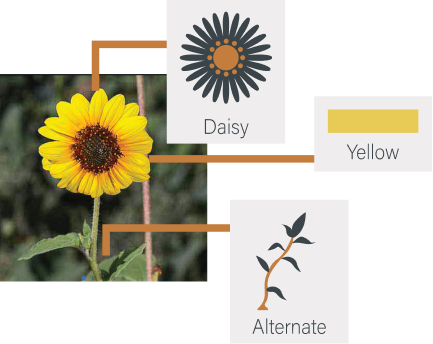
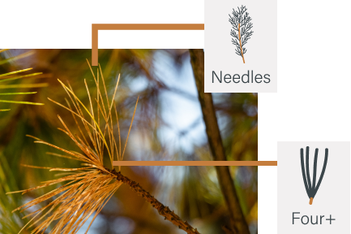

Zion National Park-Flowers App
Find more details on the large variety of wildflowers.
Sort by:

Zion
National Park
Wildflowers
NATIONAL PARK SERVICE
NATIONAL PARK SERVICE
Zion
National Park
Wildflowers
A
Common Name: {{selectedFlowerCommon}}
Latin Name: {{selectedFlowerLatin}}
Family Name: {{selectedFlowerFamily}}
Blooming Months: {{selectedFlowerBloomingMonths}}
Size: {{selectedFlowerSize}}
Flower Shape: {{selectedFlowerShape}}
Number of Petals: {{selectedFlowerPetals}}
Petal Color: {{selectedFlowerColor}}
Leaf Arrangement: {{selectedFlowerLeaves}}
Physical Description: {{selectedFlowerDescription}}
General Info: {{selectedFlowerInfo}}
A
Common Name: {{selectedTreeCommon}}
Latin Name: {{selectedTreeLatin}}
Family Name: {{selectedTreeFamily}}
Classification: {{selectedTreeClassification}}
Height: {{selectedTreeSize}}
Physical Description: {{selectedTreeDescription}}
General Info: {{selectedTreeInfo}}
After locating a plant specimen you would like to use the app to identify, go to the respective tab (wildflower or tree) at the bottom of the screen. Go to the “Search Classifications
For Wildflowers
Select the trait that most represents the plant that you are looking at. If you leave a section blank, that section will not be used when filtering the search results. For example, if you would like to see only the yellow wildflowers, select the ‘yellow’ tab and leave all other sections blank.
Wildflower Example
For Trees
Select the trait that most represents the tree that you are looking at. If you leave a section blank, that section will not be used when filtering the search results. For example, if you would like to see only the trees with needles, select the ‘needles’ tab and leave all other sections blank.
Tree Example
{{item.name | to-uppercase}}
{{item.description}}
Zion National Park-Flowers App
Find more details on the large variety of wildflowers.
Zion National Park Instagram
Explore photos found in Zion via Instagram.
Do I need to make a selection for all criteria when searching?
No. Just a single criteria may be used, though selecting more will narrow down your search faster.
What if the features vary from plant to plant?
Use the most commonly occurring feature in a population. For example, if some flowers are red, but more are orange, use “orange” as the search option.
What if the features vary on a plant?
Use the most commonly occuring feature. For example, if most leaves are alternate, but a few are opposite, use “alternate” as the search option.
What if there is more than one color on the flowers?
Select the color that occupies the most area.
How many plants Are in This App? How many are in Zion National Park?
In this first version of the app there are 278 wildflowers and 25 trees. That number may change slightly with future updates. There are nearly 1,100 species, including varieties and subspecies, known to be found in the park. Due to limitations on the size of the app, we are not attempting to include all species.
How were the plants chosen for this app?
The likelihood of visitors encountering the species and the potential interest in that species were taken into account.
Will this app work in areas outside of Zion?
Yes, but with limitations, as the focus of the app is Zion. The distribution of many of the plants found in Zion extend throughout southern Utah and beyond. However, some of the plants common at higher or lower elevations in the surrounding areas may not be found at Zion and therefore are not included in this app.
Zion National Park has a remarkable species richness with more than 1,000 species known to exist within the 148,733 acres across the park. Elevations ranging from 3,600 to 8,700 feet, varying amounts of sun and water, and unique geology create a mosaic of habitats within the park.
Contributing further to the richness of species is the park’s location on the Colorado Plateau bordered by the Great Basin and Mohave Desert. Plants from all three floristic regions can be found in Zion.
Not all plant species found in the park could be included in this app. Plant species were chosen for this app based on the likelihood of visitors encountering the species, the potential interest in that species, and the ease of field identification. Although many of the tree species found in the park aren’t truly “flowering” plants, they are included in a separate tree section of the app due to visitor interest in them.